地政学
ブエノスアイレスはアルゼンチン国家の首都で、南大西洋、パンパ、メルコスール、欧米金融市場を結ぶ。大統領府、国会、港、メディアが近く、通貨危機や農産物輸出の論争も広場の政治へ現れる都市である。今も揺れる。
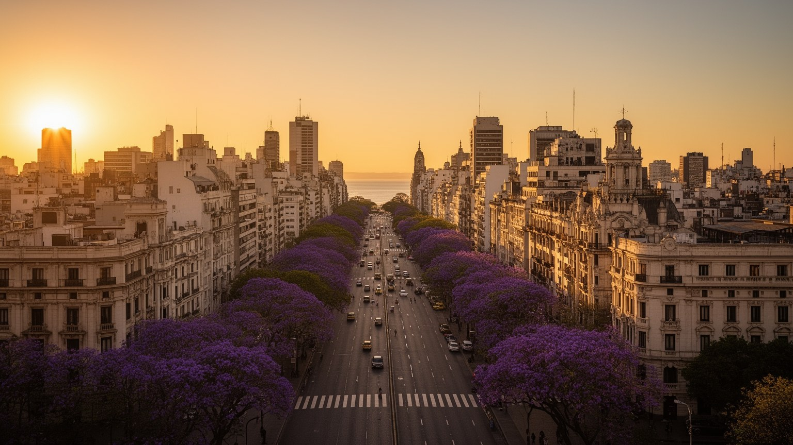
🇦🇷 アルゼンチン / 南米 / World City Atlas
ラプラタ川、国会と大統領府、港、移民の街区、タンゴ、サッカー、食文化、インフレ下の暮らしが重なるアルゼンチンの首都圏。
都市の骨格
港、広い大通り、政治広場、移民の街区、郊外鉄道、サッカー場が、欧州的な景観と南米の経済不安を同じ都市圏に結びつけている。
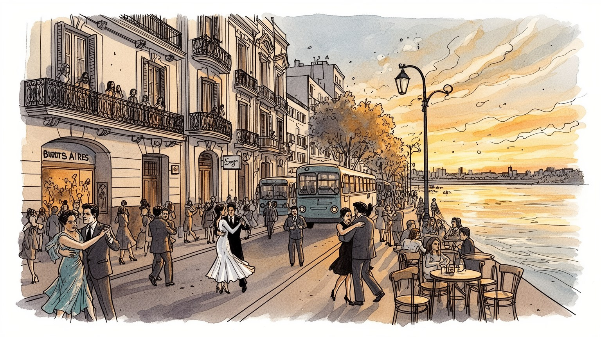
ブエノスアイレスはアルゼンチン国家の首都で、南大西洋、パンパ、メルコスール、欧米金融市場を結ぶ。大統領府、国会、港、メディアが近く、通貨危機や農産物輸出の論争も広場の政治へ現れる都市である。今も揺れる。
金融、行政、港湾、農産物流通、出版、観光、飲食、劇場、大学、医療が雇用を作る。公式な専門職と、配達、清掃、露店、家事労働、縫製、建設の仕事が近接し、インフレが賃金交渉を日常化させる街だ。今日も続く。
タンゴ、劇場、文学、カフェ、サッカー、カトリック、ユダヤ教、移民の礼拝所が都市の層を作る。イタリア系やスペイン系の記憶に、ラテンアメリカ各地の移住者の文化が重なり、街角の音を更新している。祈りもある。
広場、書店、市場、パリラ、地下鉄、郊外鉄道、港の再開発は旅人を引きつけるが、住民には物価、家賃、通勤、治安、停電、洪水が現実になる。優雅な街歩きと生活防衛が同じ歩道で交わる都市である。日々続く街。
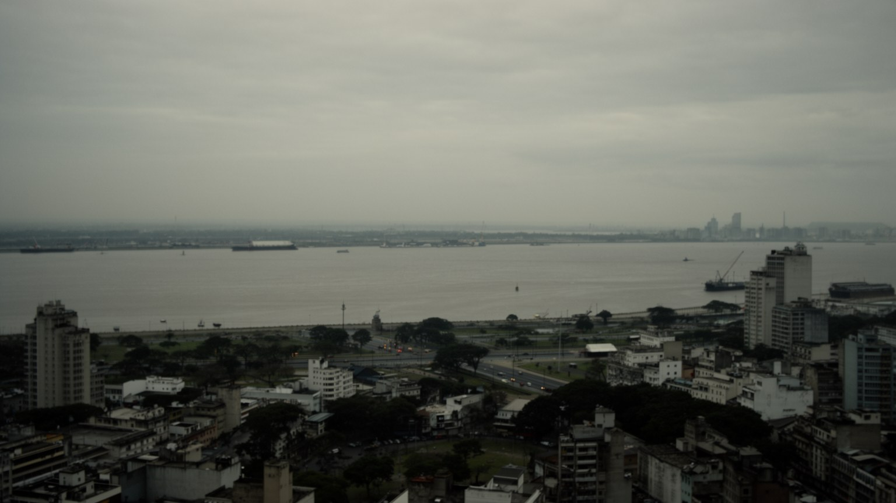
ブエノスアイレスは、海のように広いラプラタ川の南西岸に開いた都市である。水面は都市の東側を大きく区切り、港、埋め立て地、自然保護区、空港、再開発地区を一列に並べる。背後にはパンパの平坦な土地が続き、牛肉、穀物、大豆、ワイン、工業品、人の移動が首都へ集まってきた。中心部は碁盤目の街区と広い大通りを持ち、五月広場、コリエンテス通り、七月九日大通りから郊外へ鉄道と道路が放射状に伸びる。川は景観であると同時に、輸出、排水、気候、洪水、都市の境界を決める実務的な存在だ。水辺の高級住宅や公園のすぐ近くに、港湾施設、倉庫、低地の浸水リスク、貧困地区もある。平坦さは歩きやすさを生むが、雨水がたまりやすく、強い嵐の時には道路と地下交通を止める。ブエノスアイレスを読むには、欧州風の街並みだけでなく、ラプラタ川とパンパが作った輸出都市の地理を見る必要がある。船で外へ開き、鉄道で内陸を吸い寄せる構造が、政治、産業、移民、食文化を形づくった。川向こうのウルグアイや大西洋航路も近く、都市は国内首都でありながら常に対岸と海外を意識してきた。水辺は余暇の場所である前に、国家経済の玄関であり、気候変動に向き合う境界でもある。夕暮れの遊歩道や河岸の湿地も、都市が水とどう距離を取るかを教えてくれる。風の向きも生活感覚を変える。
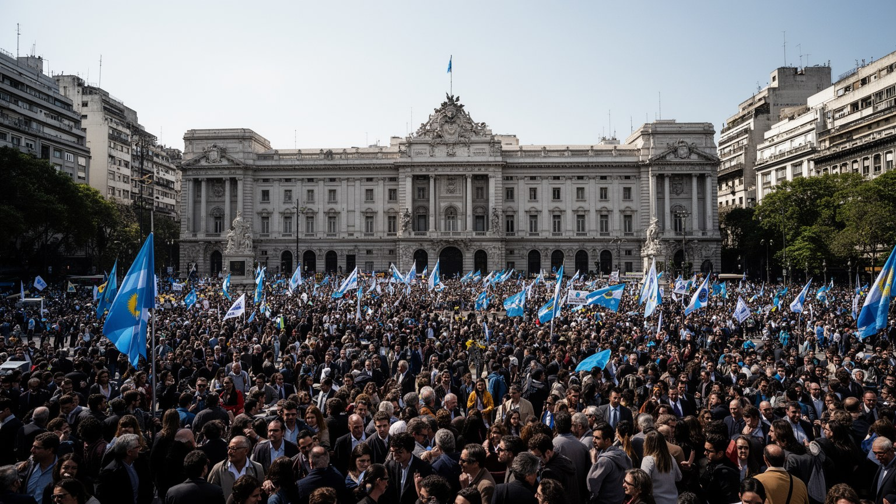
ブエノスアイレスはアルゼンチンの政治的な神経が露出する都市である。大統領府カサ・ロサダ、五月広場、国会議事堂、省庁、裁判所、労組本部、新聞社、テレビ局が近く、国の財政危機、債務交渉、農業輸出税、年金、教育、治安、通貨政策が街頭のデモと記者会見へすぐ変わる。五月広場の母たちの記憶は、軍事独裁と失踪者をめぐる痛みを都市の中心に刻み、民主主義を単なる制度ではなく記憶の実践として残している。ペロン主義、急進党、リベラル改革、労働運動、学生運動は、選挙のたびに街の壁、旗、集会、地下鉄の会話に現れる。首都の強さは、国家が近くにあるため意思決定が見えることだが、同時に地方との不均衡も生む。パンパの農業地帯、北部の貧困州、パタゴニアの資源、南大西洋の領有問題は、遠い地域課題でありながら、ブエノスアイレスの会議室と広場で語られる。経済が揺れるほど、住民は政府発表、為替、補助金、賃上げ交渉に敏感になる。政治は特別な日のイベントではなく、物価表示、銀行窓口、バス運賃、学校のスト、公共料金として日常へ入ってくる。広い大通りは祝祭の舞台にも抗議の舞台にもなり、都市の中心は国民が国家へ要求を返す場所であり続けている。地方から来るデモ隊や労組の旗も、首都が全国の不満を受け止める舞台だと示す。警備の配置も緊張を語る。
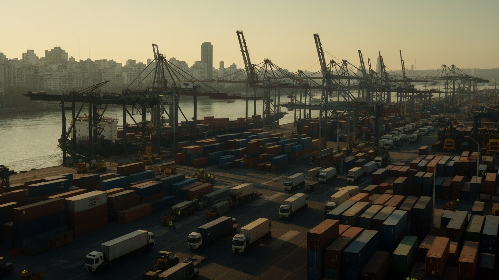
ブエノスアイレスの経済は、港と内陸の農業地帯を結ぶ回路から発展した。牛肉、穀物、大豆、皮革、ワイン、工業品、金融、保険、物流、法律、会計、出版、広告、観光が首都圏で結びつき、アルゼンチンの外貨獲得と消費市場を動かしている。プエルト・マデロの再開発は、古い倉庫とドックを高級住宅、オフィス、レストラン、ホテルへ変えたが、港湾労働と物流の現場は都市の別の場所で続いている。金融街では国債、為替、インフレ、資本規制のニュースが毎日のように語られ、企業経営と家計の判断を左右する。経済の大きさは専門職を生む一方、危機のたびに失業、非公式労働、値上げ、貯蓄の防衛を広げる。港は輸出入の数字だけでなく、トラック運転、倉庫、通関、船舶代理、冷蔵物流、清掃、警備、飲食の仕事を集める。農産物価格が上がると国は外貨を得るが、国内の食料価格も上がりやすい。首都の住民は世界市場の利益と負担を同時に受ける。港湾経済を読むには、洗練された水辺の再開発だけでなく、穀物港、幹線道路、卸売市場、為替レート、労組交渉まで同じ地図に置く必要がある。ブエノスアイレスは南米の文化都市であると同時に、パンパの産物を世界へ出し、世界の資本の揺れを家庭の食卓へ伝える都市である。税関や倉庫の遅れも、企業だけでなく小売価格と雇用に響く街である。
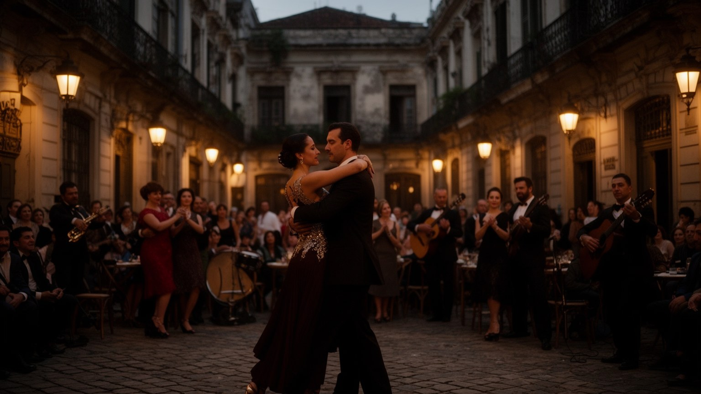
タンゴはブエノスアイレスを象徴するが、単なる観光ショーではない。十九世紀末から二十世紀初頭にかけて、港、下町、移民の下宿、酒場、売春街、黒人音楽、ヨーロッパの舞曲、地方から来た労働者の孤独が混ざり、都市の縁で生まれた表現だった。バンドネオンの音、身体の近さ、別れや郷愁を歌う歌詞は、移民都市の不安と誇りを抱えている。現在のタンゴは、サンテルモやラ・ボカの舞台、ミロンガの夜、学校、観光レストラン、国際フェスティバル、路上の演奏まで幅広い。観光客向けの華やかな演出は収入を生むが、地元の踊り手にとっては技術、礼儀、世代間の継承、安い会場の確保が重要である。ブエノスアイレスの文化はタンゴだけに閉じない。コリエンテス通りの劇場、独立系書店、カフェ、映画、ロック、現代アート、文学、新聞の言葉が、都市を議論好きで夜更かしの街にしている。カフェは作家や学生、労働者、年金生活者が時間を過ごす半公共空間であり、経済危機の話もサッカーの話も同じテーブルに載る。タンゴを読むことは、都市が痛みを美学に変え、移民の孤独を共有の記憶へ変えてきた過程を見ることだ。演奏者、衣装職人、音響、ダンス教師、観光案内、清掃員の仕事まで含めて、文化は夜ごとに作り直される。古い歌詞の言葉も、今の若者が踊ることで別の意味を帯びる街。
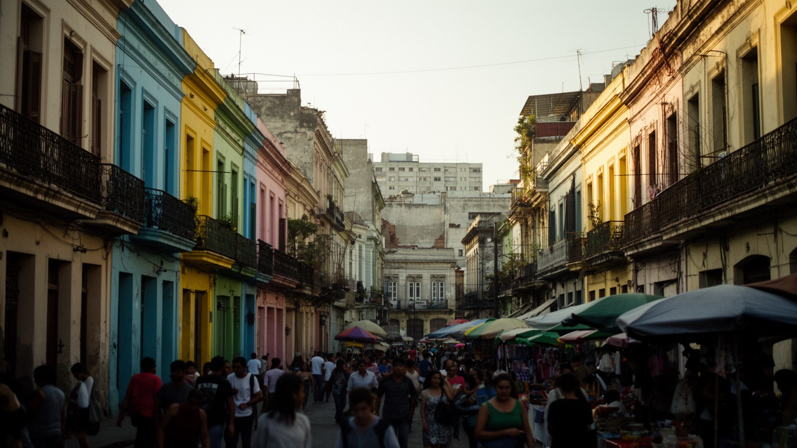
ブエノスアイレスは、移民の都市として形成された。イタリア系、スペイン系、ユダヤ系、アルメニア系、アラブ系、東欧系の人びとが港から入り、ボカ、サンテルモ、パレルモ、オンセ、ビジャ・クレスポ、バラカスなどに商店、工房、劇場、学校、礼拝所、相互扶助組織を作った。現在はボリビア、パラグアイ、ペルー、ベネズエラ、中国、韓国、セネガルなどからの移住者も都市を更新している。移民は縫製、建設、家事労働、介護、飲食、露店、配送、農産物市場、小売、大学研究まで幅広く働き、首都の生活を支える。だが在留資格、差別、低賃金、住宅の過密、警察との緊張、学校での言語支援不足もある。街区は外から見れば色彩豊かな観光地でも、住民には家賃、仕事、親族の送金、子どもの教育、礼拝、故郷との通信を支える生活基盤である。ラ・ボカのカミニートのような鮮やかな風景は、港湾労働者と移民の歴史を記号化しているが、その周辺には貧困や治安不安も続く。ブエノスアイレスの欧州的なイメージを強調しすぎると、先住民、アフリカ系、近隣諸国からの移住者の存在が薄れる。都市を正確に読むには、誰がパン屋を開き、誰が市場で働き、誰が縫製工場で長時間働き、誰が新しい言葉で学校へ通うのかを見る必要がある。移民の近隣は、過去の記念物ではなく、今日の首都を動かす柔らかい制度である。
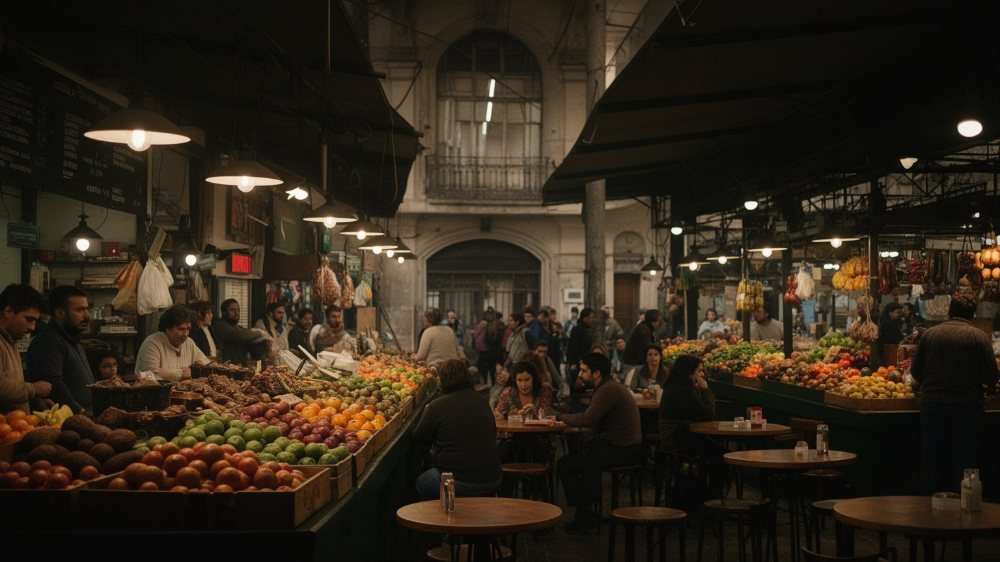
ブエノスアイレスの食文化は、パンパの畜産、イタリア系移民の料理、スペイン系の市場文化、カフェの時間、近年の多国籍な移住によって作られている。アサードやパリラは牛肉の国というイメージを支えるが、実際の食卓にはミラネサ、エンパナーダ、パスタ、ピザ、甘い菓子、マテ茶、ワイン、近所のパン屋が並ぶ。市場や肉屋、八百屋、カフェは、単に買い物をする場所ではなく、物価を確かめ、近所の会話を交わし、家計の工夫を共有する場所である。インフレが続く都市では、食料価格は政治と直結する。肉を買う回数、外食の頻度、昼食の献立、子どもの弁当、チップの額まで、為替と賃金交渉の影響を受ける。観光客にとってパリラは楽しみだが、住民にとっては食の誇りと生活費の重さが同時にある。飲食産業の背後には、仕入れ、冷蔵、調理、皿洗い、清掃、配達、深夜勤務、移民労働がある。サンテルモ市場のような歴史的な場所は観光化でにぎわう一方、日常の買い物の場としての性格を保てるかが問われる。カフェは読書、会話、仕事、政治談議、年金生活者の休憩を受け止める都市の居間でもある。ブエノスアイレスの食を読むことは、牛肉のイメージだけでなく、パンパから港、市場から家庭、物価から労働までをつなぐことである。テーブルの上には、輸出国家の富と不安が小さく折りたたまれている。
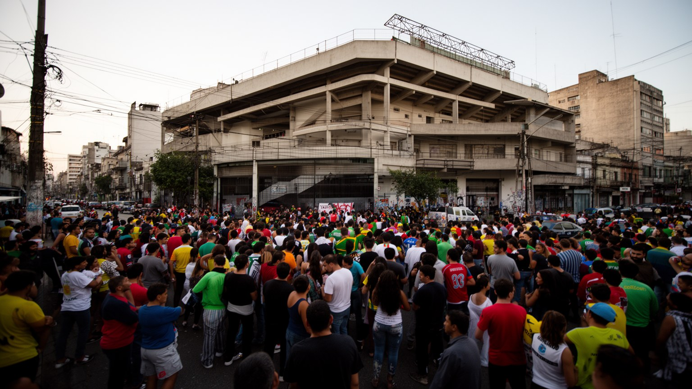
ブエノスアイレスでサッカーは、競技以上の公共文化である。ボカ・ジュニアーズ、リーベル・プレート、サン・ロレンソ、ラシン、インデペンディエンテ、ウラカンなどのクラブは、街区、階層、家族の記憶、政治的な帰属、移民の歴史を背負っている。試合の日には地下鉄、バス、バー、家庭のテレビ、街角の旗が同じ時間へ向かい、勝敗は翌日の会話の温度を変える。ラ・ボンボネーラやモヌメンタルの熱狂は観光名所でもあるが、地元のサポーターにとっては親から子へ受け継ぐ感情の場所だ。クラブは育成年代、地域活動、女性サッカー、屋内競技、会員組織を通じて近隣の社会基盤にもなる。一方で、暴力、警備、チケット価格、商業化、政治利用、男女格差の問題も抱える。サッカーは貧困地区から世界的スターを生む夢を見せるが、その夢は多くの若者の不安定な労働や教育機会の不足とも隣り合う。代表戦やワールドカップの勝利は、経済危機の中で人びとを一時的に結びつける強い力を持つ。だが祝祭の背後には、警察の配置、交通規制、露店、清掃、飲食店、放送スタッフの仕事がある。ブエノスアイレスの公共文化を読むには、劇場や書店だけでなく、クラブの旗が掛かるバル、子どもが遊ぶ小さなピッチ、試合後に歌が残る駅前まで見る必要がある。サッカーは都市が自分を語るための、最も大きな声の一つである。
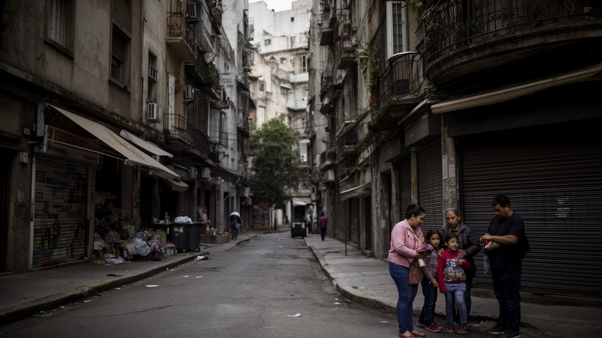
ブエノスアイレスの暮らしを理解するには、住宅とインフレを切り離せない。中心部の古い集合住宅、パレルモやレコレータの高価な賃貸、郊外の一戸建て、南部の労働者地区、ビジャと呼ばれる非公式居住地が、同じ首都圏に並んでいる。高いインフレは賃貸契約、更新料、公共料金、修繕費、食費、交通費を絶えず変え、家計の計画を難しくする。給与が上がっても物価が先に進めば、住民はドルでの貯蓄、まとめ買い、親族との同居、副業、現金決済、価格比較で身を守る。観光や短期滞在者向けの需要は一部地区の家賃を押し上げ、若い住民や低所得世帯を遠い郊外へ押し出す。古い建物の美しさは都市の魅力だが、エレベーター、断熱、配管、電力、耐震ではなく湿気や老朽化への対応に費用がかかる。ビジャでは公共サービス、排水、治安、住所登録、学校への近さが課題であり、単純な撤去では生活基盤を壊してしまう。住宅問題は市場だけでなく、通貨不安、社会保障、家族構造、都市計画、交通と結びつく。ブエノスアイレスの優雅なファサードの裏側には、家賃を払えるか、契約を更新できるか、停電時に冷蔵庫を守れるかという細かな不安がある。住まいは文化都市を楽しむ前提であり、インフレ下では都市に残れる権利そのものになる。親族の援助や共同生活も、危機をしのぐ重要な都市の仕組みである。
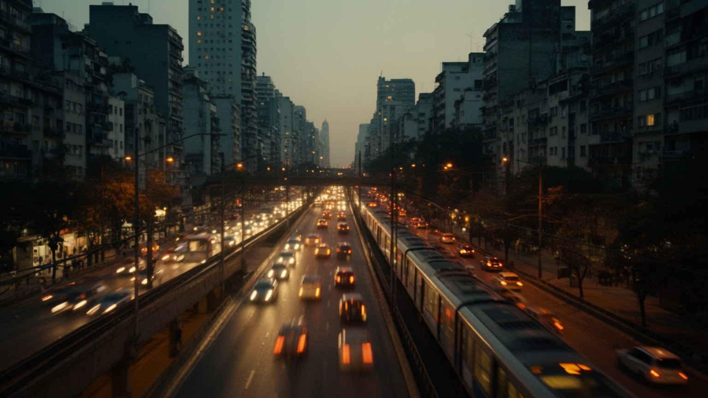
ブエノスアイレスの移動は、地下鉄スブテ、郊外鉄道、バス、タクシー、配車、自転車、徒歩が重なる。市中心部は格子状で歩きやすく、古い地下鉄は劇場街、金融街、大学、住宅地を結ぶが、首都圏全体の生活は郊外鉄道と膨大なバス路線に大きく依存している。グラン・ブエノスアイレスには低所得地区、中産階級の住宅地、工業地、ゲーテッドコミュニティ、湿地に近い開発地が広がり、中心部への通勤時間が生活を左右する。運賃補助は家計を支える一方、財政危機のたびに見直しの対象になり、値上げはすぐに労働者の負担へ跳ね返る。鉄道の遅れ、混雑、駅の安全、夜間の移動、バス停の環境は、学校、病院、仕事、介護の予定を変える。自家用車を持てる世帯は郊外の選択肢を広げられるが、車に頼る開発は渋滞、排出、土地の分断を強める。中心部の大通りは象徴的だが、都市の公平さは遠い郊外の駅まで安全に歩けるか、雨の日にバスが来るか、女性や高齢者が安心して乗れるかで測られる。交通は観光の便利さだけでなく、インフレ下で働く人が時間と賃金を守るための生活インフラである。ブエノスアイレスの広さは地図よりも通勤時間に現れ、毎朝の乗換が都市圏の社会的距離を可視化している。駅前の露店や送迎も、通勤の流れに合わせて生計を立てる。終電後の帰宅手段も生活を左右する街。
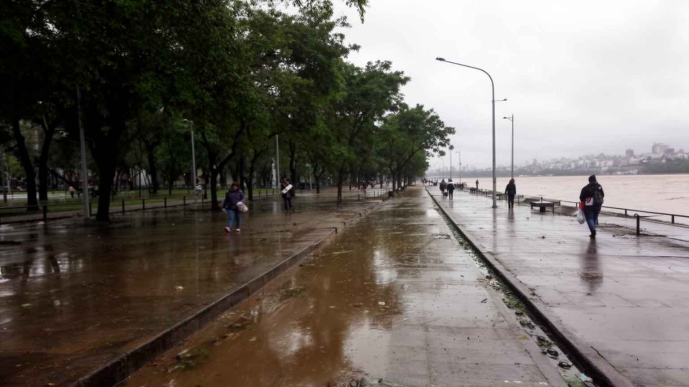
ブエノスアイレスの気候は温暖で、夏は蒸し暑く、冬は比較的穏やかである。街路樹の多い大通り、カフェの屋外席、公園、川辺の散歩はこの気候の恩恵を受けているが、都市は豪雨、洪水、熱波、停電、湿気、強風にも悩まされる。平坦な地形と暗渠化された小河川、排水インフラの不足、低地の住宅開発は、短時間の強い雨を生活被害へ変えやすい。ラプラタ川からの風や高潮、パンパからの嵐は、港湾、道路、地下鉄、郊外の低地に影響する。高温の日には冷房需要が増え、電力網が弱い地区では停電が食料保存、エレベーター、医療機器、在宅勤務を直撃する。気候リスクは均等ではない。水はけの悪い地区、非公式居住地、古い住宅、日陰の少ない街区、低所得世帯ほど被害が重くなる。公園、透水性の舗装、排水路の整備、河川再生、早期警報、避難情報、電力更新は、景観整備ではなく生活の安全に直結する。ブエノスアイレスが水辺の魅力を保つには、川を眺める都市から、川と雨に備える都市へ変わる必要がある。熱波の日の木陰、洪水時のバス運行、多言語の警報、停電後の支援まで含めて、気候政策は日常の細部に現れる。穏やかな気候の印象の下に、インフラと格差の脆弱さが隠れている。排水溝の清掃や街路樹の維持も、災害を小さくする身近な仕事である。近所の備えも命を守る知恵になる。
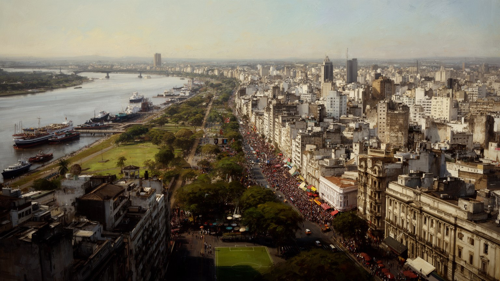
ブエノスアイレスは、欧州風の建築、タンゴ、カフェ、劇場、書店、サッカーの熱狂によって記憶されやすい。だがその印象だけでは、港湾経済、農産物輸出、通貨危機、移民労働、住宅の不安、郊外の長い通勤、洪水リスクを見落とす。都市の魅力は、五月広場から劇場街、サンテルモ、ラ・ボカ、パレルモ、プエルト・マデロへ歩ける文化的な密度にある。一方で、同じ都市圏の外縁では、バスを待つ時間、物価の上昇、治安への不安、公共サービスの不足が日常を決める。国家の政治は広場で見え、世界市場は為替と食料価格を通じて家庭へ入り、サッカーは階層を越えて都市の声を大きくする。タンゴが語る郷愁は、移民の歴史だけでなく、危機を繰り返しても街に残る人びとの感情にも重なる。ブエノスアイレスを総合的に読むには、カサ・ロサダ、港、劇場、カフェ、市場、ビジャ、郊外駅、サッカー場、排水路を同じ地図に置く必要がある。優雅なファサードの奥には、節約と交渉と親族の助け合いがあり、混乱の中にも文化を作り続ける力がある。この都市は完成した観光舞台ではなく、国家の希望と失望、移民の記憶、港の物流、街角の会話が毎日更新される首都である。魅力と矛盾を切り離さずに見る時、ブエノスアイレスの輪郭はもっと深く立ち上がる。旅人の視線と住民の家計を重ねることが、この都市を理解する近道になる。